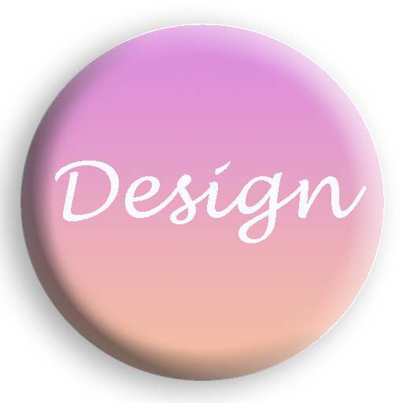

Design
Creation of prototypes and design study to create practical, functional and beautiful projects
Websites
Development of modern and interactive websites
Games
I'm studying to also develop games with unreal engine 4 with C++ and unity with C#